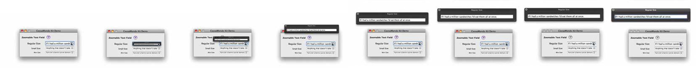
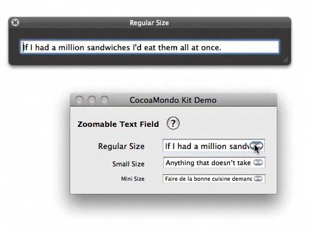

Cocoa Mondo Kit is an Interface Builder plugin that contains two interface widgets:
- A Zoomable Text Field (formally known as the Mondo Text Field)
- The Mondo Switch

The Zoomable Text Field
Great for situations where text needs to be edited but a compact interface is desired.
Originally designed for use in inspector panels for this exact reason.


The Mondo Switch
Modeled after the Time Machine interface and iPhone UISwitch. Please use sparingly. Replacing all checkboxes with switches in your desktop interface is not recommended or condoned.